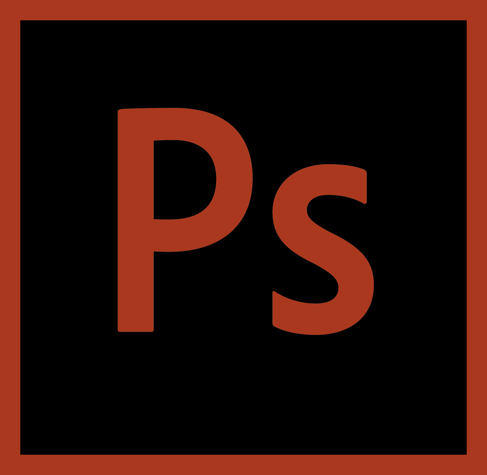

The Quarantine Series
The Quarantine Series is a set of self-portrait photographs created Fall of 2020. They display how quarantine and 2020 have been during the past few months. These images are meant to serve as a way to look back on 2020 to see how people in America were affected by COVID-19. They were arranged in an editorial fashion while also displaying my theory and knowledge of color theory and simple aesthetic composition and layout design. Different photographs represent the different parts of quarantine I have experienced due to COVID-19.
The first two images represent how masks and many other essential COVID-19 prevention items were seen as a sense of currency. People were hoarding them and buying them out from stores and online, causing many others to lack items for themselves. The first image contains neutral tones that compliment each other as well as simple white decals and text. The second image shows bolder colors that also compliment each other. There are geometric shapes and black text. I did not want the images and editing to be too bold as I thought the photographs should be the main focus.
The third image represents a more positive side of quarantine, displaying the hobbies people have taken up while being stuck at home. These photographs were shown to have a higher saturation, especially in the green of the plants as the image would stand out more if the color was emphasized. For the editing, I approached it in a way where the geometric shapes matched the colors shown in the image itself as seen in the pink from the mask and the green from the plants.

The fourth image represents how hand sanitizer can now be utilized as a polite gesture. Phrases like "Do you want some hand sanitizer?" or "Don't forget your hand sanitizer" have been common forms of greetings and sayings. I wanted the image to be an action shot of the hand sanitizer while editing it in a poster-like style. The editing was more bold and modern, inspired by advertisements.
The fifth and sixth images represent the California fires during the times of COVID-19 and quarantine. Living in California, wildfires and bad air quality have made such events even worse. I wanted to represent packing for a possible evacuation as well as wearing a mask to prevent the spread of COVID-19 all while protecting your lungs from the air quality. The editing was inspired more from fashion editorial magazines as I wanted to display interesting collage-style image overlays with text and designs.
The final image represents how school has been for students across America. The term "Zoom University" has been popularized online due to many students attending classes and lectures on the online video-chatting platform, Zoom. Because the subject is based around electronics, I wanted the image to have an electronic-type editing style, focusing on a neon green and black palette.
Tools
Used
